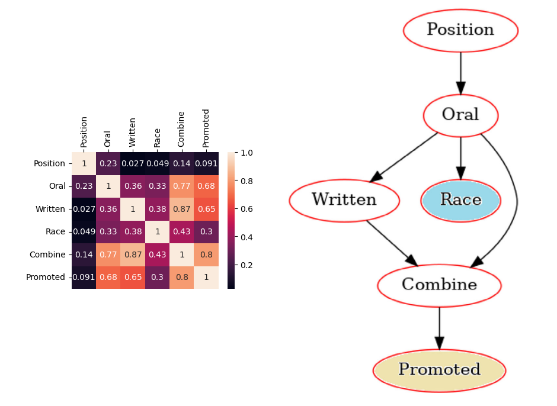

A survey on datasets for fairness-aware machine learning¶
Three ways to intervene in the name of fairness¶
Interventions in the original data
Class modification
Sampling
Change the learning algorithm
Regularization
Incorporate fairness into objective function
Post processing of the model outputs
Move decision boundary
Cascade fair classifier with black box model
Background and caveats¶
We will only explore tabular data
We will use a Bayesian network (BN) to explore the relationships between features
All numerical features will be discretized to make them categorical
Most BN algorithms cannot efficiently handle numeric features
We will examine relationships between specific, categorical features. Examples:
\(A_1 = \text{sex} \in \{M,F\}\)
\(A_2 = \text{race} \in \{\text{white},\text{nonwhite}\}\)
\(A_3 = \text{race} \in \{\text{white}, \text{black}, \text{asian-pac-islander}, \text{amer-indian}, \text{other}\}\)
\(A_4 = \text{age} \in \{ 17, 18, \dots, 90 \}\)
\(A_5 = \text{age} \in \{ 0, \dots, 255 \}\)
\(A_6 = \text{age} \in \{ 25-60, <25, >60 \}\)
Ricci v. DeStefano¶
Firefighter promotions determined by result of exam
19 whites, 1 hispanic passed exam
zero out of 20 black firefighters passed exam
Supreme court ruled that ignoring the exam violates 1964 civil rights act
Attribute |
Values |
Description |
|---|---|---|
Position |
{Lieutenant,Captain} |
Desired promotion |
Race |
{White, Non-White} |
Self identified race |
Written |
[46-95] |
Written exam score |
Oral |
[40.83-92.8] |
Oral exam score |
Combined |
[45.93-92.8] |
0.6 *written + 0.4*oral |
Promoted |
{True,False} |
Whether a promotion was obtained |
Bayesian network structure learning¶
The structure of the network \(\scr{M}\) should maximize the likelihood of generating the dataset \(\cal{D}\)
Regularize the parameters of the network \(\widehat{\scr{M}}\) (i.e. the edges of the graph)
Ensure that the protected attribute \(y\) is a leaf node
Optimization completed using the pomegranate software
Exact and approximate algorithms are available
All of the datasets used are small enough to use exact algorithms

Finance (KDD)¶
-balance -bayes
Criminology (Compas)¶
Healthcare (Diabetes)¶
Education (Math)¶
Review of fairness metrics¶
Review data balance¶
Methodology¶
Make all protected classes binary
Perform logistic regression